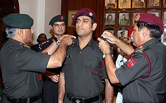
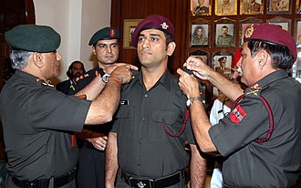

"When I die, the last thing I want to see is the six that
Dhoni hit in the 2011
World
Cup-Final."
-Sunil Gavaskar
"Dhoni the best captain I have played under " -Sachin Tendulkar
The man who won million hearts(THALA)

Mahendra Singh Dhoni, born on July 7, 1981, in Ranchi (then Bihar), began his cricket journey as a goalkeeper in football before switching to cricket on his coach's advice. He played for the Commando Cricket Club and soon progressed to represent Bihar in U-19 cricket. Dhoni made his Ranji Trophy debut for Bihar in the 1999–2000 season, showing promise as a wicketkeeper-batsman. His major breakthrough came in 2003 when he was selected for the India A team’s tour to Kenya and Zimbabwe, where he impressed with powerful performances, including centuries against Pakistan A. These performances caught the selectors' attention, leading to his ODI debut for India on December 23, 2004, against Bangladesh. Although he was run out for a duck in his first match, Dhoni quickly made a mark with a stunning 148 against Pakistan in his fifth ODI. His fearless batting style, cool temperament, and finishing ability soon made him one of India’s most valuable players and set the stage for a legendary international career.


| Personal Information | ||||
|---|---|---|---|---|
| Name | Mahendra Singh Dhoni | |||
| Born | 7 July 1981 (age 35) Ranchi, Bihar, India | |||
| Nickname | Mahi, MS, MSD, Captain Cool | |||
| Height | 5 ft 9 in (1.75 m) | |||
| Batting style | Right-handed | |||
| Bowling style | Right-arm medium | |||
| Role | Wicket-keeper batsman | |||
| Domestic Team Information | ||||
|---|---|---|---|---|
| Years | Team | |||
| 2004-2019 | India | |||
| 1999/00 - 2003/04 | Bihar | |||
| 2004/05 - present | Jharkhand | |||
| 2016 - 2017 | Rising Pune Supergiants | |||
| 2008 - Present | Chennai Super Kings | |||
| International Information | ||||
|---|---|---|---|---|
| National Side | India | |||
| ODI/T20I shirt no. | 7 | |||
| Test debut(cap 251) | 2 December 2005 v Sri Lanka | |||
| Last test | 26 December 2014 v Australia | |||
| ODI debut (cap 158) | 23 December 2004 v Bangladesh | |||
| Last ODI | 9 July 2019 v New Zealand | |||
| T20I debut(cap 2) | 1 December 2006 v South Africa | |||
| Last T20I | 27 February 2019 v Australia | |||
| Career Statistics | Competition | Test | ODI | T20Is | FC |
|---|---|---|---|---|
| Matches | 90 | 285 | 73 | 131 |
| Runs scored | 4876 | 9250 | 1112 | 7038 |
| Batting average | 38.09 | 51.10 | 35.87 | 36.84 |
| 100s/50s | 6/33 | 10/61 | 0/0 | 6/47 |
| Top score | 224 | 183* | 48** | 224* |
| Balls bowled | 96 | 36 | - | 126 |
| Wickets | 0 | 1 | - | - |
| Catches/stumping | 256/38 | 269/94 | 41/22 | 364/57 |
Source:- MSD(statistics)
T20 World Cup 2007
ICC Test Mace 2009
IPL 2010
CLT20 2010
Cricket World Cup 2011
IPL 2011
Champions Trophy 2013
CLT20 2014
IPL 2018
IPL 2021
IPL 2023
Release Date: September 30, 2016
Director: Neeraj Pandey
Lead Actor: Sushant Singh Rajput as Mahendra Singh Dhoni
This inspiring biographical film follows the journey of Mahendra Singh Dhoni, one of India's most iconic cricket captains. From his childhood in Ranchi to leading India to World Cup victories, the movie showcases the dedication, discipline, and determination behind Dhoni’s success.
Choose your preferred language:
 
